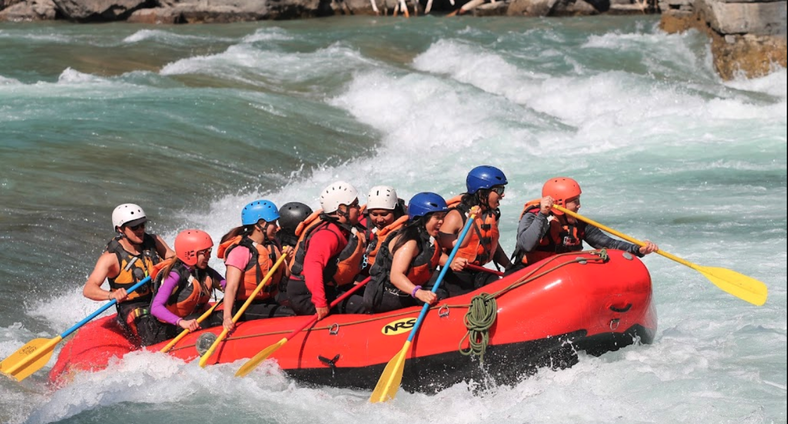

Whitewater Rafting is an Unforgettable Group experience
Corporate & Team building events
Planning a staff incentive trip or meeting retreat? Look no further! Whitewater rafting in offers an exciting opportunity for true team participation and peer interaction. Whitewater rafting is something that all members of your group can enjoy, even those with no previous experience. The sense of adventure brings teams closer, and provides the opportunity to work together and achieve a goal. The supportive atmosphere as your group experiences something new and exciting together helps nurture successful working relationships and promote self, and team, confidence. Throughout our years of operation we’ve taken many groups of colleagues for a whitewater experience. A common response for us is that participants have gotten to know their friend or colleague better in one afternoon on the river than they have in a year at the office. We are confident that you will find the same results.
Youth Groups
Whitewater rafting offers an outstanding opportunity for any young person to experience the great outdoors in a compelling and exciting way – all while developing valuable life skills. Whitewater rafting is inclusive, and encourages high participation levels and team-playing, yet is open to any individual age 5 and over. No previous experience is necessary; we provide full instruction on safety and paddling techniques.
Save when you book 9 or more adults on a Rafting trip !
Book your group of 9 or more adults on the and save! Discount applies to new bookings, payment must be taken in one transaction.